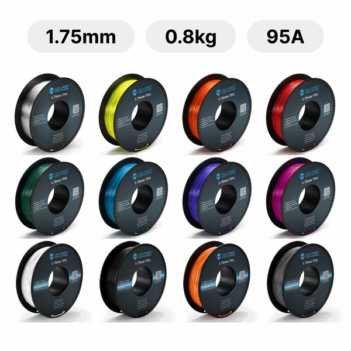

Flexible
TPU
TPU es la puerta de entrada a los materiales flexibles. No se parece a imprimir PLA: aquí importa tanto la formulación como la ruta mecánica del filamento dentro del extrusor.

Resumen rápido
Dificultad
Media. La dureza Shore cambia mucho la experiencia real.
Uso típico
Juntas, topes, fundas, pies antideslizantes, ruedas blandas y piezas deformables.
Punto fuerte
Elasticidad y resistencia al impacto.
Punto débil
Alimentación delicada, stringing y sensibilidad a humedad.
Qué es
TPU es un elastómero termoplástico. En 3D se vende en durezas distintas, como 95A, 90A o incluso más blandas. Esa cifra cambia mucho: un 95A puede ser relativamente razonable; un 85A ya pone mucha más presión sobre el extrusor y la trayectoria del filamento.
Temperaturas orientativas
| Parámetro | Rango habitual | Comentario |
|---|---|---|
| Boquilla | 210-240 °C | Los TPU muy blandos suelen preferir rango medio-alto estable. |
| Cama | 30-60 °C | Más para adhesión consistente que por contracción térmica. |
| Ventilación | Baja a media | Demasiada ventilación puede empeorar unión y acabado. |
| Cámara | No necesaria | La clave aquí es alimentación, no recinto. |
Tipos de TPU y variantes relevantes
En TPU la variante importa muchísimo porque cambia la experiencia completa de impresión. Aquí no basta con decir “es TPU”: hay que mirar dureza Shore, elasticidad, aditivos y objetivo final.
TPU 95A
Es la puerta de entrada más habitual. Sigue siendo flexible, pero resulta mucho más manejable en extrusión que opciones más blandas. Para muchos usuarios es el TPU lógico para empezar.
TPU 90A o 85A
Cuanto más blando es el material, más delicada se vuelve la alimentación. Gana elasticidad, pero también sube la dificultad, el riesgo de atascos y la sensibilidad a velocidad y retracción.
TPU de alta velocidad
Algunas formulaciones intentan hacer el material más estable en máquinas rápidas. Ayudan, pero no borran el hecho de que TPU necesita control mecánico y material seco.
TPU especializado
- TPU más duro: prioriza resistencia a abrasión y control dimensional antes que máxima elasticidad.
- TPU muy blando: sirve para juntas, agarres o piezas muy deformables, pero exige más experiencia.
- TPU compuesto o técnico: puede buscar mejor resistencia química, eléctrica o desgaste, según la formulación.
En TPU la pregunta correcta no es solo “qué temperatura lleva”, sino “qué dureza Shore tiene y qué tan bien guiado está el filamento en mi máquina”.
Compatibilidad y hardware
- Cuanto más cerrado y guiado esté el recorrido del filamento, mejor.
- Los extrusores direct drive suelen llevar ventaja frente a Bowden largos.
- Velocidades moderadas suelen dar mejores resultados que perseguir récords.
- Las retracciones agresivas empeoran más de lo que arreglan en muchos TPU.
Humedad y almacenamiento
TPU absorbe humedad con facilidad. Si hay material donde secar pronto suele ahorrar horas, es este. El filamento húmedo tiende a dejar hilos, burbujas y superficies pobres.
Ventajas
- Flexibilidad real donde PLA, PETG o ABS no sirven.
- Gran absorción de impactos y vibraciones.
- Muy útil para piezas de contacto, agarre o sellado ligero.
Límites
- No es material para prisas ni perfiles genéricos muy rápidos.
- Los TPU blandos pueden deformarse en el extrusor si la ruta no está bien contenida.
- No todas las geometrías se benefician de la flexibilidad; a veces solo vuelven la pieza inestable.
Usos recomendados
Si una pieza necesita doblarse, absorber impactos o agarrar superficies, TPU es la respuesta natural.
Problemas típicos
Atascos en extrusor
El filamento se dobla antes de entrar en el hotend si hay huecos o demasiada presión.
Stringing
Puede venir por humedad, temperatura alta o retracciones inapropiadas.
Capas inconsistentes
Normalmente están relacionadas con velocidad demasiado alta para la dureza elegida.
TPU en una Bambu A1
La A1 puede manejar TPU, especialmente durezas más firmes como 95A, pero compensa empezar lento y con material seco. No es momento de buscar máxima velocidad, sino alimentación limpia y capas uniformes.
Cuándo elegirlo y cuándo no
Elige TPU si el comportamiento elástico es una necesidad real de la pieza.
No lo elijas solo por curiosidad estética si aún no tienes controlados PLA o PETG.
Utilidad de la página